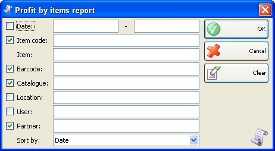
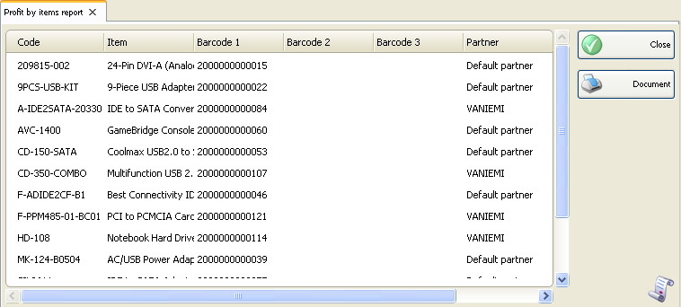

Profit dupa raport articole
In prima fereastra a raportului specificati criteriul de filtrare si campurile care se vor vizualiza.
Numai liniile verificate (bifate) sunt vizualizate in Raport.

Puteti sa alegeti o filtrare pentru fiecare camp apasand tasta.
Puteti limita Raportul la un singur criteriu. De exemplu, puteti vizualiza profitul unui anumit articol. Puteti aplica mai multe criterii de filtrare � de exemplu, vizualizati profitul pentru un partener anumit si o anumita perioada de timp.
Click pe butonul Clear pentru stergerea filtrarilor specificate. In acest caz raportul va afisa toate operatiile efectuate fara nici o restrictie.
Click pe butonul OK pentru a genera raportul folosind criteriile specificate.
Click pe butonul Cancel pentru inchiderea ferestrei.

Raportul contine informatii despre articolele vandute si profitul total al acestora, un ordine descrescatoare. Pentru fiecare articol sunt afisate codul, numele si codul de bare, data, localizarea si compania care a obtinut profit.
�2006-2012 Microinvest, All rights reserved